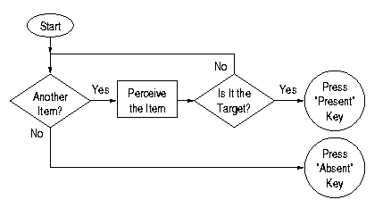
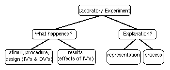

| Conjunction Search: Look for a White Circle. | ||||||||||||||||||||||||||||||||||||||||||||||||||||
|---|---|---|---|---|---|---|---|---|---|---|---|---|---|---|---|---|---|---|---|---|---|---|---|---|---|---|---|---|---|---|---|---|---|---|---|---|---|---|---|---|---|---|---|---|---|---|---|---|---|---|---|---|
| Few Items | Many Items | |||||||||||||||||||||||||||||||||||||||||||||||||||
| Target Absent |
|
|
||||||||||||||||||||||||||||||||||||||||||||||||||
| Target Present |
|
|
||||||||||||||||||||||||||||||||||||||||||||||||||
|  |
| Flow chart for serial exhaustive search. |
The linear increase in RT is explained by the fact that for every item added to the display, the process must go through the loop that checks whether the item is the target. The double slope for target-absent items is explained by the fact that all the items must be checked when there is no target to be found, but if there is a target present, then on average only half the items must be checked until the target if found.
This theory emphasizes processing, and does not make strong commitments about representation. It assumes that items are represented in such a way that they can be separately attended to; i.e., the format is in fact as separate items. But beyond that, the theory doesn't specify whether the items are represented as templates or features or structures or whatever.
This experiment and theory
provide a good example of the knowledge organization emphasized in the
syllabus. See if you can fill in all the relevant information in the
diagram at left.